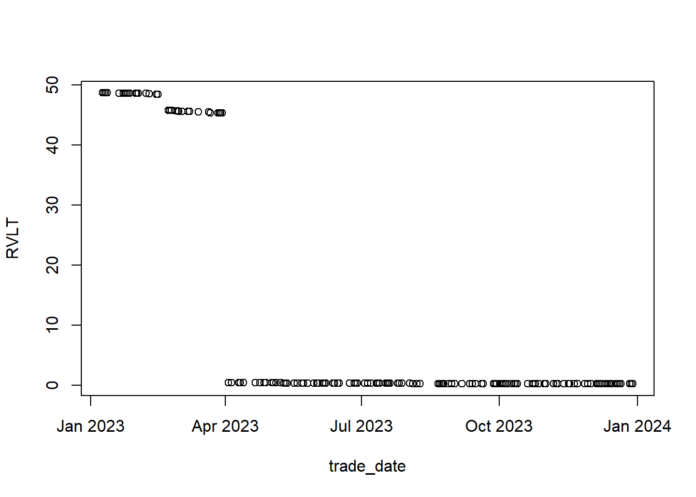
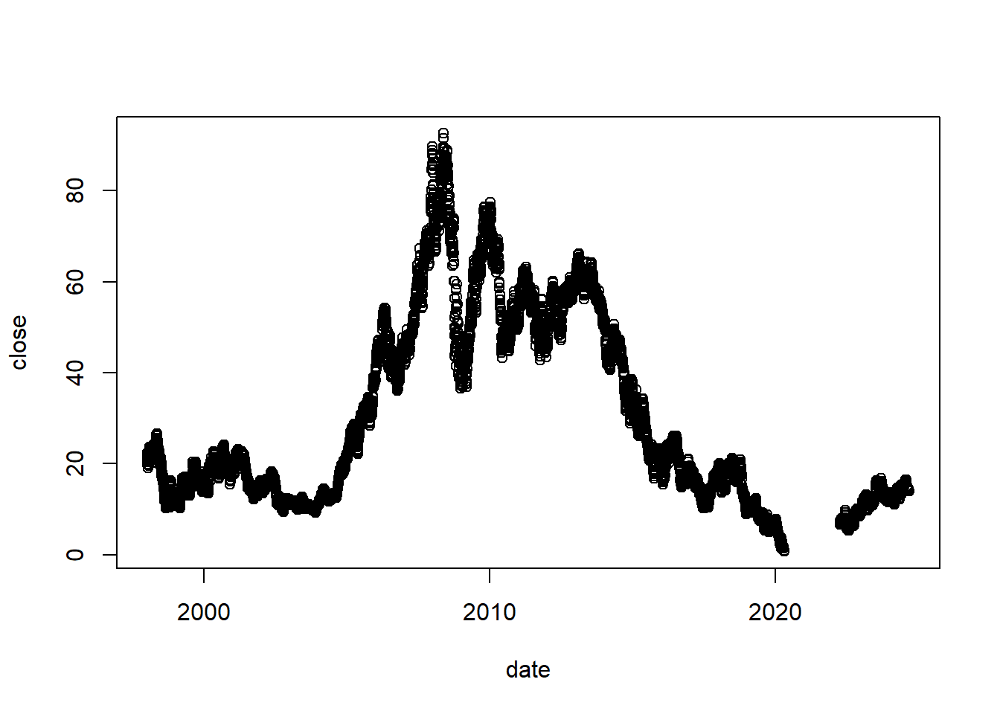

library(fastverse)
library(DT)
library(tinyplot)
library(finutils)
library(PerformanceAnalytics)Implied Volatility Term Structure as a predictor of equity options returns
Terminology
Implied Volatility (IV): This is the market’s forecast of the future volatility of the underlying asset, inferred from the prices of options. It represents the uncertainty or risk perceived by the market participants.
Term Structure: Refers to how implied volatility changes across different option expirations (maturities). For example, options expiring in 1 month might have a different implied volatility compared to those expiring in 6 months. When you plot implied volatilities across maturities, the resulting curve is called the implied volatility term structure (IVTS). The authors are investigating whether IVTS characteristics (slope, curvature, shifts) reveal valuable information about future market conditions or option prices.
Term structure of equity volatility: same as above.
Jump probability refers to the likelihood of sudden, significant price changes (or “jumps”) in the underlying asset (e.g., a stock or index). These jumps are beyond what standard continuous-time models, like the Black-Scholes framework, can predict.
Time-varying means this probability is not constant but changes over time based on market conditions, news, sentiment, or other factors.
ATM Straddle Implied Volatility: Average of the implied volatilities of call and put options at-the-money (?).
Literature
Main paper is Jump Risk and Option Returns by Jim Campasano and Matthew Linn.
In a recent study, Heston et al. (2023) analyze option return predictors from the literature and show SLOPE and IV RVSLOPE to be “the two strongest predictors” of returns.
Alpha variables
SLOPE
Defined using option-implied volatilities to estimate both short-term and long-term volatility.
Prior research (Vasquez, 2017) identifies it as a robust predictor of future option returns.
The implied volatility term structure slope (SLOPE), is defined using long-term and short term (one month) implied volatility, IVLT and IV1M respectively. SLOPE is given by
\[ SLOPE=(IV_{LT}-IV_{1M})/IV_{LT} \]
- Short-term implied volatility, \(IV_{1M}\), is defined as the at-the-money (ATM) straddle implied volatility with a maturity closest to one month. Long-term implied volatility, \(IV_{LT}\) is the implied volatility of the ATM straddle with the shortest maturity of at least six months. Authors allow flexibility for the long term maturity since an equity may not have six month options listed due to its calendar listing cycle
- This ex-ante measure forecasts transitory jump activity. Since SLOPE only predicts jumps in the near future, returns of short maturity option portfolios are increasing with SLOPE, as they do with the IVRVSLOPE portfolios. However, for portfolios constructed using three through six month options, returns are decreasing in SLOPE.
IVRV SLOPE
Combines implied volatility (IV) for short-term volatility and realized volatility (RV) for long-term volatility (measured from historical data).
Previous research (Goyal and Saretto, 2009) demonstrates its effectiveness in predicting option strategy returns. However, the authors of that study did not explicitly classify it as a volatility term structure measure.
Alpha Discovery
In portfolios formed weekly by sorting on term structure slope, we find a significant difference in both total and idiosyncratic jump frequency between the first and last quintiles.
Results
We show when term structure slope is low, or downward sloping (short term volatility is high relative to long term volatility), jump probability is high. In fact, volatility term structure is a better predictor of stock jumps than previously proposed indicators in the literature.
Data
Daily equity prices (source Quantconnect)
Equity Options Data (source ORATS)
Code
Setup
Data
1) Daily OHLCV data
I use Quantconnect dailydata for all stocks from 199.8 to today. I will use finutils package to import data in one line of code
# Import data
prices = qc_daily(
file_path = "F:/lean/data/stocks_daily.csv",
price_threshold = 1e-8,
min_obs = 252,
market_symbol = NULL,
symbols = NULL
)
# Be aware the key is set
key(prices)[1] "symbol"Isnpect and calculate addiional variables
Let’s glimpse the data:
dim(prices)[1] 50040445 9head(prices)Key: <symbol>
symbol date open high low close volume close_raw
<char> <IDat> <num> <num> <num> <num> <i64> <num>
1: a 1999-11-19 25.90827 25.94447 24.01975 24.55071 10687600 40.69
2: a 1999-11-22 24.92479 26.02291 24.17059 25.98067 4369400 43.06
3: a 1999-11-23 25.64279 26.32459 24.28523 24.36367 4033700 40.38
4: a 1999-11-24 24.21283 25.30491 24.13439 24.73775 3477800 41.00
5: a 1999-11-26 24.66535 25.03943 24.58691 24.73775 1196500 41.00
6: a 1999-11-29 24.73775 25.60659 24.47227 25.30491 2827400 41.94
returns
<num>
1: -0.04123468
2: 0.05824527
3: -0.06223874
4: 0.01535414
5: 0.00000000
6: 0.02292683We need to calculate yearly realized volatility. From the paper, realized volatility (RVLT) is calculated as the twelve-month realized volatility derived from the daily closing prices of the underlying equity. This provides a historical measure of volatility based on actual price movements
# Calculate returns
prices[, returns := close / shift(close) - 1, by = symbol]
# Rolling 12-month realized volatility (252 trading days)
prices[, RVLT := frollsum(returns^2, n = 252), by = symbol]Lets plot realized volatilies for sample of stocks using tinyplot
prices[symbol %in% prices[, sample(unique(symbol), 4)]] |>
# na.omit(_) |>
plt(RVLT ~ date | symbol, data = _)
2) Options data
We are going to use ORATS options data. Here we explain all columns
I have daily options data from 2007 to 2024. This data is really big, but we don’t need most of the data. That is, in the paper the authors use 5 filter steps to extract only options contracts we need for analysis
To save RAM, we will import zipped cav files and do analysis for every file separetly. This is slower, but I wil allows us to import more data.
TODO: Save ziped csv files in parquet database with symbol as index and import using arrow package.
First, lets create filtering function:
# Filtering process in the paper:
# For both implied volatility measures we use ATM straddle implied volatilities
# computed as the average volatility of the put and call options closest to
# at-the-money which survive the following filters:
# (1) The underlying equity has a closing price of at least $10;
# (2) The option price must not violate arbitrage conditions;
# (3) The option must have a non-zero bid;
# (4) The absolute value of the delta must be between 0.35 and 0.65; and
# (5) The implied volatility must be between 3% and 200%.
filter_options = function(dt) {
# apply filter 1
dt = dt[stkPx > 10]
# apply filter 2
dt = dt[abs(cBidPx - cAskPx) > 0]
dt = dt[abs(pBidPx - pAskPx) > 0]
# apply filter 3
dt = dt[cBidPx > 0]
dt = dt[pBidPx > 0]
# apply filter 4
dt = dt[abs(delta) > 0.35 & abs(delta) < 0.65]
# apply filter 5
dt = dt[cBidIv > 0.3 & cBidIv < 2]
dt = dt[pBidIv > 0.3 & pBidIv < 2]
return(dt)
}# Get all paths for 2022 and 2023
paths = paste0("F:/data/option/", 2022:2023)
files = unlist(lapply(paths, list.files, full.names = TRUE))
# Read sample
dt = lapply(files, function(x) filter_options(fread(x)))
dt = rbindlist(dt)In the end, we keep only 100 percent of the data.
We will do some preliminary data cleaning
dt[, let(
expirDate = as.IDate(as.Date(expirDate, format = "%m/%d/%Y")),
trade_date = as.IDate(as.Date(trade_date, format = "%m/%d/%Y"))
)]Data Summary
# Dimension of the dataset
dim(dt)[1] 13599974 39# Data summary
head(dt) ticker cOpra pOpra stkPx expirDate yte strike
<char> <char> <char> <num> <IDat> <num> <num>
1: A A220218C00140000 A220218P00140000 144.03 2022-02-18 0.10685 140.0
2: AA AA220114C00060000 AA220114P00060000 61.23 2022-01-14 0.01096 60.0
3: AA AA220114C00061000 AA220114P00061000 61.23 2022-01-14 0.01096 61.0
4: AA AA220114C00061500 AA220114P00061500 61.23 2022-01-14 0.01096 61.5
5: AA AA220114C00062000 AA220114P00062000 61.23 2022-01-14 0.01096 62.0
6: AA AA220114C00062500 AA220114P00062500 61.23 2022-01-14 0.01096 62.5
cVolu cOi pVolu pOi cBidPx cValue cAskPx pBidPx pValue pAskPx cBidIv
<int> <int> <int> <int> <num> <num> <num> <num> <num> <num> <num>
1: 33 71 15 289 7.90 7.98 8.50 4.00 4.15 4.40 0.308659
2: 230 649 978 278 2.24 2.26 2.29 1.00 1.03 1.08 0.613790
3: 321 3484 1775 1081 1.65 1.68 1.73 1.43 1.46 1.50 0.601720
4: 465 429 73 65 1.40 1.44 1.48 1.68 1.72 1.78 0.598715
5: 307 521 219 214 1.19 1.22 1.25 1.95 2.00 2.06 0.601839
6: 922 425 97 115 0.99 1.03 1.06 2.25 2.32 2.36 0.597937
cMidIv cAskIv smoothSmvVol pBidIv pMidIv pAskIv iRate divRate
<num> <num> <num> <num> <num> <num> <num> <int>
1: 0.32536 0.342057 0.310192 0.310595 0.32172 0.332847 1e-03 0
2: 0.62426 0.634724 0.611958 0.604037 0.62078 0.637525 5e-04 0
3: 0.61738 0.633042 0.594798 0.600294 0.61400 0.627697 5e-04 0
4: 0.61432 0.629921 0.591949 0.597247 0.61675 0.636255 5e-04 0
5: 0.61362 0.625392 0.592819 0.592399 0.61403 0.635654 5e-04 0
6: 0.61232 0.626708 0.596942 0.588078 0.61069 0.633296 5e-04 0
residualRateData delta gamma theta vega rho
<num> <num> <num> <num> <num> <num>
1: 0.007700 0.627332 0.02607208 -0.06961229 0.17969282 0.07600601
2: 0.021898 0.635243 0.09619159 -0.18272713 0.02389595 0.00350722
3: 0.021898 0.535183 0.10457446 -0.18808818 0.02555310 0.00306396
4: 0.021898 0.482723 0.10539033 -0.18792918 0.02564644 0.00279475
5: 0.021898 0.430992 0.10384031 -0.18587545 0.02500484 0.00252863
6: 0.021898 0.381895 0.09995523 -0.18155821 0.02433824 0.00226874
phi driftlessTheta extVol extCTheo extPTheo spot_px trade_date
<num> <num> <char> <char> <char> <num> <IDat>
1: -0.08261834 -0.07098985 0.329374 8.27217 4.33758 NA 2022-01-10
2: -0.00370305 -0.18466128 0.566776 2.1277 0.910967 NA 2022-01-10
3: -0.00321249 -0.18975873 0.560262 1.5441 1.32774 NA 2022-01-10
4: -0.00292226 -0.18944466 0.558286 1.29635 1.58012 NA 2022-01-10
5: -0.00263760 -0.18723932 0.557227 1.07827 1.86217 NA 2022-01-10
6: -0.00236265 -0.18277623 0.55706 0.89056 2.17455 NA 2022-01-10# # Plot call bid prices
# dt_ = dt_raw[ticker == "AAPL"][1:1000]
# plt(~ cBidPx | cOpra, data = dt_)
# # Histogram of implied volatilities using tinyplot
# plt(~ cBidIv, data = dt_raw)ATM options
1. Identify ATM Options:
# Add a column for the absolute difference between strike and spot price
dt[, atm_diff := abs(strike - stkPx)]
# Find ATM options (minimum atm_diff for each ticker, date, and expiration)
atm_options = dt[, .SD[which.min(atm_diff)], by = .(ticker, trade_date, expirDate)]
# Inspect the ATM options
head(atm_options) ticker trade_date expirDate cOpra pOpra stkPx
<char> <IDat> <IDat> <char> <char> <num>
1: A 2022-01-10 2022-02-18 A220218C00140000 A220218P00140000 144.03
2: AA 2022-01-10 2022-01-14 AA220114C00061000 AA220114P00061000 61.23
3: AA 2022-01-10 2022-01-21 AA220121C00061000 AA220121P00061000 61.23
4: AA 2022-01-10 2022-01-28 AA220128C00061000 AA220128P00061000 61.23
5: AA 2022-01-10 2022-02-04 AA220204C00061000 AA220204P00061000 61.23
6: AA 2022-01-10 2022-02-11 AA220211C00061000 AA220211P00061000 61.23
yte strike cVolu cOi pVolu pOi cBidPx cValue cAskPx pBidPx pValue
<num> <num> <int> <int> <int> <int> <num> <num> <num> <num> <num>
1: 0.10685 140 33 71 15 289 7.90 7.98 8.50 4.00 4.15
2: 0.01096 61 321 3484 1775 1081 1.65 1.68 1.73 1.43 1.46
3: 0.03014 61 171 101 157 214 3.10 3.18 3.25 2.94 2.97
4: 0.04932 61 21 84 11 114 3.60 3.67 3.75 3.45 3.51
5: 0.06849 61 19 54 5 6 4.00 4.11 4.20 3.90 3.99
6: 0.08767 61 2 27 7 13 4.20 4.50 4.95 4.25 4.40
pAskPx cBidIv cMidIv cAskIv smoothSmvVol pBidIv pMidIv pAskIv
<num> <num> <num> <num> <num> <num> <num> <num>
1: 4.40 0.308659 0.32536 0.342057 0.310192 0.310595 0.32172 0.332847
2: 1.50 0.601720 0.61738 0.633042 0.594798 0.600294 0.61400 0.627697
3: 2.99 0.706360 0.72411 0.741858 0.714345 0.718903 0.72482 0.730735
4: 3.60 0.650480 0.66438 0.678275 0.663821 0.651327 0.66522 0.679122
5: 4.15 0.616294 0.63203 0.647763 0.635236 0.621801 0.64147 0.661139
6: 4.55 0.573665 0.62588 0.678086 0.618117 0.597290 0.61817 0.639052
iRate divRate residualRateData delta gamma theta vega
<num> <int> <num> <num> <num> <num> <num>
1: 1e-03 0 0.007700 0.627332 0.02607208 -0.06961229 0.17969282
2: 5e-04 0 0.021898 0.535183 0.10457446 -0.18808818 0.02555310
3: 5e-04 0 0.010196 0.535919 0.05251980 -0.13677636 0.04226873
4: 5e-04 0 -0.006013 0.536092 0.04423520 -0.09766342 0.05397708
5: 5e-04 0 0.000774 0.538335 0.03921672 -0.07910144 0.06356350
6: 1e-03 0 0.004273 0.540539 0.03560476 -0.06787869 0.07184357
rho phi driftlessTheta extVol extCTheo extPTheo spot_px
<num> <num> <num> <char> <char> <char> <num>
1: 0.07600601 -0.08261834 -0.07098985 0.329374 8.27217 4.33758 NA
2: 0.00306396 -0.00321249 -0.18975873 0.560262 1.5441 1.32774 NA
3: 0.00808576 -0.00887918 -0.13751960 0.663412 2.91848 2.70547 NA
4: 0.01268554 -0.01414313 -0.09964303 0.627405 3.47545 3.32087 NA
5: 0.01741289 -0.01967755 -0.08086781 0.610182 3.96114 3.82614 NA
6: 0.02205152 -0.02522297 -0.06947532 0.59717 4.36891 4.24914 NA
atm_diff
<num>
1: 4.03
2: 0.23
3: 0.23
4: 0.23
5: 0.23
6: 0.232.Calculate ATM Straddle Implied Volatility
Use the average implied volatilities of the call and put for each ATM option:
\[ATMIV=\frac{CallIV(cMidIv)+PutIV(pMidIv)}{2}\]
# Calculate ATM straddle implied volatility using ORATS data
atm_options[, atm_iv := (cMidIv + pMidIv) / 2]3. Define \(IV_{1M}\) and \(IV_{LT}\)
- Short-Term (\(IV_{1M}\)): Closest to 30 days to expiration. This implies finding the option with the shortest time-to-expiry in the range of approximately 0–60 days.
- Long-Term (\(IV_{LT}\)): Maturity of at least 180 days (allow flexibility for options with maturities slightly greater than 6 months).
# Step 1: Calculate days to expiration
atm_options[, days_to_expiry := yte * 365]
# Step 2: Filter and calculate short-term IV (nearest to 1 month, 0–60 days)
short_term_iv = atm_options[
days_to_expiry > 0 & days_to_expiry <= 60, # Short-term filter
.SD[which.min(abs(days_to_expiry - 30))], # Closest to 30 days
by = .(ticker, trade_date) # Group by ticker and trade_date
]
long_term_iv = atm_options[
days_to_expiry >= 180, # Long-term filter
.SD[which.min(days_to_expiry)], # Shortest maturity ≥ 180 days
by = .(ticker, trade_date) # Group by ticker and trade_date
]
# Ste 3: Merge short-term and long-term IVs
iv_data = merge(short_term_iv, long_term_iv, by = c("ticker", "trade_date"),
suffixes = c("_short", "_long"))3) Merge data
4. Merge short-term and long-term IVs
Merge short-term and long-term IV values to compute SLOPE and other measures
# Keep only necessary columns for further analysis
iv_data_simplified = iv_data[, .(
ticker,
trade_date,
IV1M = atm_iv_short, # Rename short-term IV
IVLT = atm_iv_long # Rename long-term IV
)]
# Calculate SLOPE
iv_data_simplified[, SLOPE := (IVLT - IV1M) / IVLT]
# SEt key to make merge faster
setkey(iv_data_simplified, ticker)
setorder(iv_data_simplified, ticker, trade_date)
# Merge realized volatility
iv_data_simplified = merge(
iv_data_simplified,
prices[, .(symbol = toupper(symbol), date, RVLT)],
by.x = c("ticker", "trade_date"),
by.y = c("symbol", "date"),
all.x = TRUE,
all.y = FALSE
)
# Order
setorder(iv_data_simplified, ticker, trade_date)
# View simplified dataset
print(iv_data_simplified)Key: <ticker, trade_date>
ticker trade_date IV1M IVLT SLOPE RVLT
<char> <IDat> <num> <num> <num> <num>
1: A 2022-01-25 0.390670 0.330305 -0.182755332 0.04621174
2: A 2022-01-27 0.366205 0.332535 -0.101252500 0.04414007
3: A 2022-02-04 0.327770 0.326445 -0.004058877 0.04589349
4: A 2022-02-07 0.347680 0.336025 -0.034684919 0.04591825
5: A 2022-02-14 0.358285 0.326190 -0.098393574 0.04764913
---
364685: ZYXI 2023-04-14 0.698145 0.696695 -0.002081255 0.44454488
364686: ZYXI 2023-04-21 0.680925 0.739640 0.079383213 0.43854113
364687: ZYXI 2023-04-24 0.633015 0.637500 0.007035294 0.43782468
364688: ZYXI 2023-04-28 0.557335 0.630735 0.116372169 0.43795786
364689: ZYXI 2023-05-02 0.646455 0.626925 -0.031152052 0.45904903In below analysis I dicoverd some very large values for RVLT. It looks like error so I decided to delete extreme values here.
First, let;s list symbols that have very large RVTL values
# Identify tickers with very large RVTL values
tickers_outliers = iv_data_simplified[, .(have_outlier = any(RVLT > 10, na.rm = TRUE)),
by = ticker]
tickers_outliers = tickers_outliers[have_outlier == TRUE, ticker]
tickers_outliers [1] "AADI" "AMC" "APP" "CBL" "DO" "DWAC" "GEN" "NE" "PATH" "SLNO"
[11] "TXMD"Let’s plot RVLT of one symbol:
plt(RVLT ~ trade_date, data = iv_data_simplified[ticker == "DO"])
Let’s see close price too
plt(close ~ date, data = prices[symbol == "do"])
Obviously, there is an error in this symbol. We will remove all this symbols. There are 11 such symbols (out of 3301)
iv_data_simplified = iv_data_simplified[ticker %notin% tickers_outliers]
Check symbols in daily prices code!: “APP” “CBL” “NE” “GEN” “PATH” “AADI” “DO” “SLNO” “DWAC” “TXMD” “AMC”
Descriptive and summary statistics
Let’s start with some basic summary statistics
iv_data_simplified[, .(
start_date = min(trade_date),
end_date = max(trade_date),
number_of_observations = .N,
unique_tickers = length(unique(ticker))
)] start_date end_date number_of_observations unique_tickers
<IDat> <IDat> <int> <int>
1: 2022-01-10 2023-12-29 363168 3290mean_ = transpose(iv_data_simplified[, .(
SLOPE = round(mean(SLOPE, na.rm = TRUE), 2),
IV1M = round(mean(IV1M, na.rm = TRUE), 2),
IVLT = round(mean(IVLT, na.rm = TRUE), 2),
RVLT = round(mean(RVLT, na.rm = TRUE), 2)
)], keep.names = "Variable")
colnames(mean_)[2] = "mean"
max_ = transpose(iv_data_simplified[, .(
SLOPE = round(max(SLOPE, na.rm = TRUE), 2),
IV1M = round(max(IV1M, na.rm = TRUE), 2),
IVLT = round(max(IVLT, na.rm = TRUE), 2),
RVLT = round(max(RVLT, na.rm = TRUE), 2)
)], keep.names = "Variable")
colnames(max_)[2] = "max"
sd_ = transpose(
iv_data_simplified[, .(
SLOPE = round(sd(SLOPE, na.rm = TRUE), 2),
IV1M = round(sd(IV1M, na.rm = TRUE), 2),
IVLT = round(sd(IVLT, na.rm = TRUE), 2),
RVLT = round(sd(RVLT, na.rm = TRUE), 2))], keep.names = "Variable")
colnames(sd_)[2] = "sd"
skew_ = transpose(iv_data_simplified[, .(
SLOPE = round(skewness(SLOPE, na.rm = TRUE), 2),
IV1M = round(skewness(IV1M, na.rm = TRUE), 2),
IVLT = round(skewness(IVLT, na.rm = TRUE), 2),
RVLT = round(skewness(RVLT, na.rm = TRUE), 2)
)], keep.names = "Variable")
colnames(skew_)[2] = "skew"
kurtosis_ = transpose(iv_data_simplified[, .(
SLOPE = round(kurtosis(SLOPE, na.rm = TRUE), 2),
IV1M = round(kurtosis(IV1M, na.rm = TRUE), 2),
IVLT = round(kurtosis(IVLT, na.rm = TRUE), 2),
RVLT = round(kurtosis(RVLT, na.rm = TRUE), 2)
)], keep.names = "Variable")
colnames(kurtosis_)[2] = "kurtosis"probs_ = c(0.01, 0.05, 0.25, 0.5, 0.95, 0.99)
q_ = transpose(iv_data_simplified[, .(
SLOPE = round(quantile(SLOPE, na.rm = TRUE, probs = probs_), 2),
IV1M = round(quantile(IV1M, na.rm = TRUE, probs = probs_), 2),
IVLT = round(quantile(IVLT, na.rm = TRUE, probs = probs_), 2),
RVLT = round(quantile(RVLT, na.rm = TRUE, probs = probs_), 2)
)],
keep.names = "Variable"
)
names_ = paste0("q", probs_*100)
colnames(q_)[2:ncol(q_)] = names_Reduce(function(x, y) merge(x, y, by = "Variable"),
list(mean_, sd_, skew_, kurtosis_, max_, q_))Key: <Variable>
Variable mean sd skew kurtosis max q1 q5 q25 q50 q95
<char> <num> <num> <num> <num> <num> <num> <num> <num> <num> <num>
1: IV1M 0.57 0.22 2.01 8.33 4.35 0.31 0.33 0.40 0.51 0.98
2: IVLT 0.54 0.19 1.57 4.39 2.27 0.31 0.33 0.40 0.50 0.89
3: RVLT 0.35 0.36 7.08 99.76 7.72 0.07 0.09 0.16 0.25 0.89
4: SLOPE -0.04 0.16 -2.22 22.42 0.67 -0.54 -0.30 -0.12 -0.03 0.16
q99
<num>
1: 1.32
2: 1.15
3: 1.65
4: 0.25Kurtosis for the RVLT is very high. something we would not expect. Other values are expected I would say.
I put here screenshot of summary statistics from the paper:

It seems my statiscs are in general more volatile. For exmaple, much higher kurtosis for the slope.
Implied volatilities are higher than mean volatilies in the paper, but this is expected because of different time period. We get negative slope, as in the paper, since mean \(IV_{1M} > IV_{LT}\).